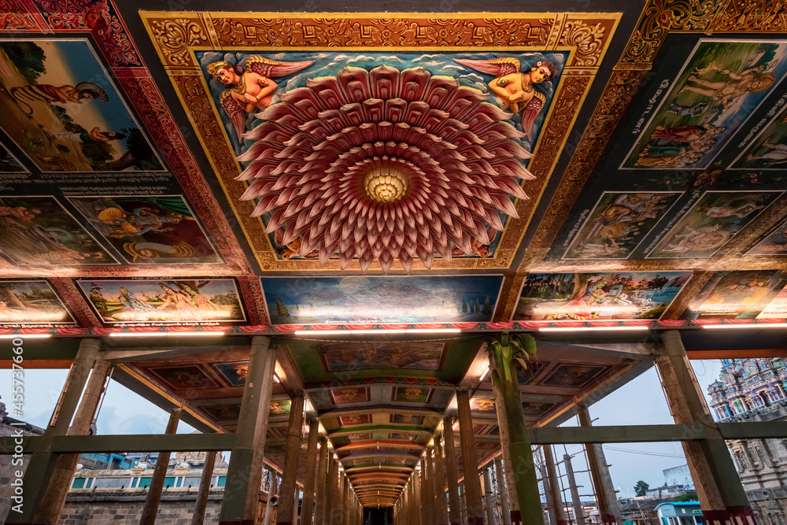

Thillai Nataraja Temple, also referred as the Chidambaram Nataraja Temple, is a Hindu temple dedicated to Nataraja, the form of Shiva as the lord of dance. This temple is located in Chidambaram, Tamil Nadu, India. This temple has ancient roots and a Shiva shrine existed at the site when the town was known as Thillai.[4][5] Chidambaram, the name of the city literally means "stage of consciousness". The temple architecture symbolizes the connection between the arts and spirituality, creative activity and the divine.[6][7][8] The temple wall carvings display all the 108 karanas from the Natya Shastra by Bharata Muni, and these postures form a foundation of Bharatanatyam, an Indian classical dance.[4][6] The present temple was built in the 10th century when Chidambaram was the capital of the Chola dynasty. After its 10th-century consecration by the Cholas who considered Nataraja as their family deity,[9] the temple has been damaged, repaired, renovated and expanded through the 2nd millennium. Most of the temple's surviving plan, architecture and structure is from the late 12th and early 13th centuries, with later additions in similar style.[10] While Shiva as Nataraja is the primary deity of the temple, it reverentially presents major themes from Shaktism, Vaishnavism, and other traditions of Hinduism. The Chidambaram temple complex, for example, has the earliest known Amman or Devi temple in South India, a pre-13th-century Surya shrine with chariot, shrines for Ganesha, Murugan and Vishnu, one of the earliest known Shiva Ganga sacred pool, large mandapas for the convenience of pilgrims (choultry, ambalam or sabha) and other monuments.[11][12] Shiva himself is presented as the Nataraja performing the Ananda Tandava ("Dance of Delight") in the golden hall of the shrine Pon Ambalam.[13] The temple is one of the five elemental lingas in the Shaivism pilgrimage tradition, and considered the subtlest of all Shiva temples (Kovil) in Hinduism.[6] It is also a site for performance arts, including the annual Natyanjali dance festival on Maha Shivaratri
